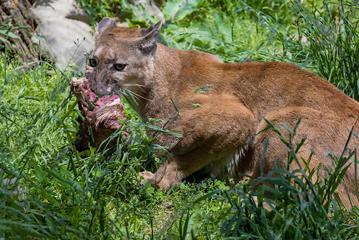
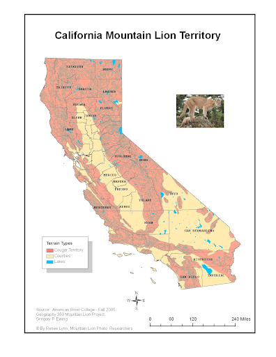
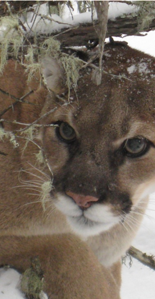

Mountain Lion
Diet
The diet of mountain lions mostly consists of deer, and they would kill a deer about once a week. Mountain Lions would also eat coyotes, raccoons, rodents, elk, feral hogs, and porcupines. Being opportunistic hunters, they also prey on smaller animals such as squirrels. Mountain Lions tend to drag their meals and relocate them. Once they chose a location, they would cover their meals in grass, dry leaves, or pine needles. This would protect the food from being discovered by other animal and reduces spoilage. Cougars are ambush predators, where they catch their unsuspecting prey rather than chasing them. Their brute strength isn’t comparable to a bear, so they use their speed and precision to secure their prey. Mountain lions will hunt till their hunger and the hunger of their kittens is satiated making them relentless hunters.
SourceHabitat
Mountain Lions prefer areas with cover and large prey. These habitats are dense forests, bush-abundant mountains, and rocky canyons. All these habitats provide the predator with natural cover from unsuspecting prey. Of course, having a diet of mostly deer, the habitat must be suitable for deer. Deer are abundant in foraging areas as well as areas with cover. Cover, in return, gives deer a chance to escape from predators. Other factors influence the mountain lions' choice of habitable land. Male mountain lions decide their home range based on the abundance of potential mates. Females favor somewhat secluded home ranges that would keep their kittens safe.
SourceBio
Mountain lions have long and sleek bodies. They have long legs with big feet that have retractable claws. These large cats have large and sharp canine teeth and special molars that are used to stab and tear into prey. The coat of mountain lions is very short and is primarily tan. The underside of its body is white. Because of their bone structure, mountain lions are unable to roar. Instead, they can purr, hiss, growl, yowl, and scream.
Source